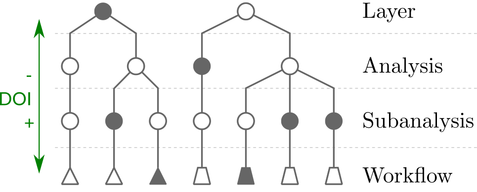

Interactive Visualization of Provenance Graphs for Reproducible Biomedical Research
Master's Thesis by Stefan Luger
March 2016
The Reproducibility Crisis
Recently, researchers often fail to reproduce published study results for
|
[Kaiser 2015] |
The Reasons
|
Workflows
of sequential and linked
Provenance
“The two important features of the provenance of a data product are theancestral data product(s) from which this data product evolved, and the process oftransformation of these ancestral data product(s), potentially through workflows, that helpedderive this data product. ”
[Simmhan et al. 2005]
Visualization
Visual analysis of
The Refinery Platform
a web-based data
|
Refinery Workflow Visualization
refinery-platform.org

|
|
|
|
|
Terms
Workflow
Dataset + multiple analyses =>
Goal
Interactive provenance
- Navigate and explore provenance graphs over time
- Refinery Platform integration
User Tasks
from the perspective of an Analyst
- High-Level Overview
Show workflow runs, type and time - Attribute Encoding
Visual encoding of attributes (e.g., cell type, time, hierarchy level) - Filter
Trim irrelevant data - Drill-Down on Demand
Navigate among hierarchy levels - Investigate Changes
Communicate changes over time - Investigate Causality
Files and transformations that led to a particular result
Related Work
- Simplistic encoding
- Mostly static
- Heavy use of text labels
- Limited interaction
- Lack of time encoding
- Suboptimal graph
layout aesthetics - Do not scale

Methods
|
Node-Link
|
Dynamic Graph Layout*
|
Filtering
|
|
Aggregation |
Motif Compression |
Degree-of-Interest |
|
Analysis Timeline
|
Glyph Design
|
Path Highlighting*
|
Hierarchical Aggregation
|
|
Workflow Level |
|
|
Subanalysis Level |
|
|
Analysis Level |
Motif-based Compression
|
|
Subanalysis Level |
|
|
Analysis Level |
|
|
Layer Level |
Motifs
Discover analyses with the
Layers
Layer analyses with the
Metrics
Compute deviating amount of incoming or outgoing links and subanalyses.
Combined Aggregation Strategy
Subanalyses
Analyses
Layers
Degree-of-Interest (DOI)
Every
| General interest: |
|
(v,w) <- [0..1] |
| User actions: |
|
v <- [0,1], w <- [0..1] |
|
Adjust weights: |
DOI(n) affects node visibility:  |
Use Case
The user wants to find all derived transformations and results for a recently created analysis.Figure shows the visualization state after step 4
Conference Contributions
- Concept mockup in Poster
Transparent Layering for Visualizing Dynamic Graphs Using the Flip Book Metaphor. [Stitz et al. 2014] at IEEE VIS Conference (InfoVis '14), Paris, France. - Late implementation results in PosterInteractive Visualization of Provenance Graphs for Reproducible Biomedical Research. [Luger et al. 2015] at ISMB Symposium on Biological Data Visualization (BioVis '15), Dublin, Ireland.
- Final implementation results in PosterInteractive Visualization of Provenance Graphs for Reproducible Biomedical Research. [Luger et al. 2015] at IEEE VIS Conference (InfoVis '15), Chicago, IL, USA.
- User scenario in Full Paper [conditionally accepted for EuroVis '16]AVOCADO: Visualization of Workflow-Derived Data Provenance for Reproducible Biomedical Research. [Stitz et al. 2016]
IEEE Conference on Visualization (InfoVis '15)
Won
Conclusion
Analysts are now able to
- Overview through
aggregation strategies - Dynamic
node-link approach isintutitive to accomplish attribute andtopological tasks -
Visual encoding of attributes, time, and change metrics; Color scheme - Extensive
interactive approach: pan, zoom, drag & drop, select, filter, highlight, collapse, expand -
Interest-driven navigation via a modular DOI function - Multiple support views:
Timeline, DOI, Node details, Color scheme
<thanks/>
| Marc Streit | Nils Gehlenborg | Holger Stitz | Samuel Gratzl |
- Comittee
- Refinery Platform team
- Institute of Computer Graphics
- Study colleagues
- Family and friends
Bibliography
- J. Kaiser, “The Cancer Test,” Science, vol. 348, no. 6242, pp. 1411–1413, 2015.
- Y. L. Simmhan, B. Plale, and D. Gannon, “A Survey of Data Provenance in e-Science,” ACM SIGMOD Record, vol. 34, no. 3, pp. 31–36, 2005.
- “Refinery Platform.” 2015.
- L. Omberg, K. Ellrott, Y. Yuan, C. Kandoth, C. Wong, M. R. Kellen, S. H. Friend, J. Stuart, H. Liang, and A. A. Margolin, “Enabling Transparent and Collaborative Computational Analysis of 12 Tumor Types within The Cancer Genome Atlas,” Nat Genet, vol. 45, no. 10, pp. 1121–1126, 2013.
- M. K. Anand, S. Bowers, and B. Ludaescher, “Provenance Browser: Displaying and Querying Scientific Workflow Provenance Graphs,” in Proceedings of the IEEE Conference on Data Engineering (ICDE ’10), 2010, pp. 1201–1204.
- S. Davidson, S. Cohen-Boulakia, A. Eyal, B. Ludaescher, T. McPhillips, S. Bowers, and J. Freire, “Provenance in Scientific Workflow Systems,” IEEE Data Engineering Bulletin, vol. 30, no. 4, pp. 44–50, 2007.
- M. I. Seltzer and P. Macko, “Provenance Map Orbiter: Interactive Exploration of Large Provenance Graphs,” in Proceedings of the USENIX Workshop on the Theory and Practice of Provenance (TaPP ’11), 2011.
- F. Beck, M. Burch, S. Diehl, and D. Weiskopf, “The State of the Art in Visualizing Dynamic Graphs,” in Proceedings of the Eurographics Conference on Visualization (EuroVis ’14) -- State of The Art Reports, 2014.
- N. Elmqvist and J.-D. Fekete, “Hierarchical Aggregation for Information Visualization: Overview, Techniques, and Design Guidelines,” IEEE Transactions on Visualization and Computer Graphics, vol. 16, no. 3, pp. 439–454, 2010.
- R. Milo, S. Shen-Orr, S. Itzkovitz, N. Kashtan, D. Chklovskii, and U. Alon, “Network Motifs: Simple Building Blocks of Complex Networks,” Science, vol. 298, no. 5594, pp. 824–827, 2002.
- E. Maguire, P. Rocca-Serra, S.-A. Sansone, J. Davies, and M. Chen, “Visual Compression of Workflow Visualizations with Automated Detection of Macro Motifs,” IEEE Transactions on Visualization and Computer Graphics, vol. 19, no. 12, pp. 2576–2585, 2013.
- G. W. Furnas, “Generalized Fisheye Views,” in Proceedings of the SIGCHI Conference on Human Factors in Computing Systems (CHI ’86), 1986, pp. 16–23.
- F. van Ham and A. Perer, “‘Search, Show Context, Expand on Demand’: Supporting Large Graph Exploration with Degree-of-Interest,” IEEE Transactions on Visualization and Computer Graphics (InfoVis ’09), vol. 15, no. 6, pp. 953–960, 2009.
- J. Abello, S. Hadlak, H. Schumann, and H.-J. Schulz, “A Modular Degree-of-Interest Specification for the Visual Analysis of Large Dynamic Networks,” IEEE Transactions on Visualization and Computer Graphics (InfoVis ’13), vol. 20, no. 3, pp. 337–350, 2014.
Bibliography cont'd.
- S. Luger, H. Stitz, S. Gratzl, M. Streit, and N. Gehlenborg, “Interactive Visualization of Provenance Graphs for Reproducible Biomedical Research,” in Poster Proceedings of the Symposium on Biological Data Visualization (BioVis ’15), 2015.
- S. Luger, H. Stitz, S. Gratzl, N. Gehlenborg, and M. Streit, “Interactive Visualization of Provenance Graphs for Reproducible Biomedical Research,” in Poster Compendium of the IEEE VIS Conference (InfoVis ’15), 2015.
- H. Stitz, S. Gratzl, S. Luger, N. Gehlenborg, and M. Streit, “Transparent Layering for Visualizing Dynamic Graphs Using the Flip Book Metaphor,” in Poster Compendium of the IEEE VIS Conference (InfoVis ’14), 2014.
- M. Streit and O. Bimber, “Visual Analytics: Seeking the Unknown,” Computer, vol. 46, no. 7, pp. 20–21, 2013.
- T. Munzner, Visualization Analysis and Design. CRC Press, 2014.
- N. Elmqvist, T.-N. Do, H. Goodell, N. Henry, and J. Fekete, “ZAME: Interactive Large-Scale Graph Visualization,” in Proceedings of the IEEE Pacific Visualization Symposium (PacificVis ’08), 2008, pp. 215–222.
- M. Ghoniem, J.-D. Fekete, and P. Castagliola, “A Comparison of the Readability of Graphs Using Node-Link and Matrix-Based Representations,” in Proceedings of the IEEE Symposium on Information Visualization (InfoVis ’04), 2004, pp. 17–24.
- H.-J. Schulz and H. Schumann, “Visualizing Graphs - A Generalized View,” in Proceedings of the IEEE Conference on Information Visualisation (IV ’06), 2006, pp. 166–173.
- B. Shneiderman, “The Eyes Have It: A Task by Data Type Taxonomy for Information Visualizations,” in Proceedings of the IEEE Symposium on Visual Languages (VL ’96), 1996, pp. 336–343.
- B. Lee, C. Plaisant, C. S. Parr, J.-D. Fekete, and N. Henry, “Task Taxonomy for Graph Visualization,” in Proceedings of the AVI Workshop on Beyond time and errors: novel evaluation methods for information visualization (BELIV ’06), 2006, pp. 1–5.
- “dagre - Graph Layout for JavaScript.” 2015.
- K. Sugiyama, S. Tagawa, and M. Toda, “Methods for Visual Understanding of Hierarchical System Structures,” IEEE Transactions on Systems, Man and Cybernetics, vol. 11, no. 2, pp. 109–125, 1981.
- E. Maguire, P. Rocca-Serra, S.-A. Sansone, J. Davies, and M. Chen, “Taxonomy-Based Glyph Design with a Case Study on Visualizing Workflows of Biological Experiments,” IEEE Transactions on Visualization and Computer Graphics (InfoVis ’12), vol. 18, no. 12, pp. 2603–2612, 2012.
- D. Keim, J. Kohlhammer, G. Ellis, and F. Mansmann, Eds., Mastering the Information Age - Solving Problems with Visual Analytics. Eurographics Association, 2010.
Bibliography cont'd.
Please see thesis bibliography.
Appendix
Scientific Workflow Systems
- Analysis platforms
- Manage scientific repositories (genomics, astronomy, ...) and automate heterogeneous, large, and complex experiments
- Present, share, and visualize results
- Track data provenance
Challenges
Provenance graphs
- become
large very quickly - contain
temporal information
Node-Link Diagram Approach
-
Matrix and implicit representations arenot tightly coupled -
Node-link is ideal forpath-finding tasks - Due to the
hierarchical nature of the provenance graph, a node-link approach can still be scalable.
Node Glyph Design
- Node type:
shape and icon - Date and Time:
brightness - Attributes: text
labels - Topological information:
numerals - Change: asterisk
- Highlighting:
color and strokewidth
Filter
by attributes, analysis, and time frame.Filter options: (a) blend, (b) hide.
Analysis Timeline
Graph shows blend and hide for filter option (c).
Dynamic Layout
The
- Layered graph drawing (Sugiyama style) approach
- Column-based layout for motif discovery
- Deterministic workflow layout
- Barycenter heuristic subanalysis reordering
- Animations and transitions
- Dagre graph layout library: github.com/cpettitt/dagre
Showcase
Use Case 2
The user wants to investigate the files and transformations leading to a correctly reproduced result.
Full Paper Teaser
Class Diagram
Motif Discovery & Layering
Other Interaction Techniques
- Filter
- Pan and zoom
- Fit to screen
- Drag and drop
- Node selection; also reveals details in info tab
- Node mouseover; shows tooltips for quick info
- Color coding by node type, workflow template, or time
Discussion
- Time Encoding and Exploration
- Graph Layout
- Navigation among Hierarchy Levels
- Node Glyph Design
- Technical Considerations
InfoVis '14
BioVis '15
Future Work
- Provenance of Findings: Annotations and Visualization States
- Actionable Provenance
- Extend DOI function
- Enhance Motif-based Layering